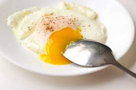

Eggs Over Easy, Easily
Cooking eggs is easy. Why am I doing this recipe? Well, I found an extra easy way to cook your over easy eggs using a non-stick pan, it's lid, and some water!
Ingredients
- 3 Eggs
- 1/2 Tablespoon of Butter
- Salt and Pepper
- Non-Stick Pan With Lid
- Tablespoon of Water
Steps:
- Set your stovetop burner to med-high heat
- Add butter
- Make sure the melted butter evenly coats the pan
- Add eggs
- After 15-30 seconds, add water, preferably next to eggs if any panspace is open
- Cover with lid
- Watch through lid if you have a glass lid. Once the top of the egg yolk turns translucently white, they're done! It should only take a minute or two
- Plate and salt and pepper to taste